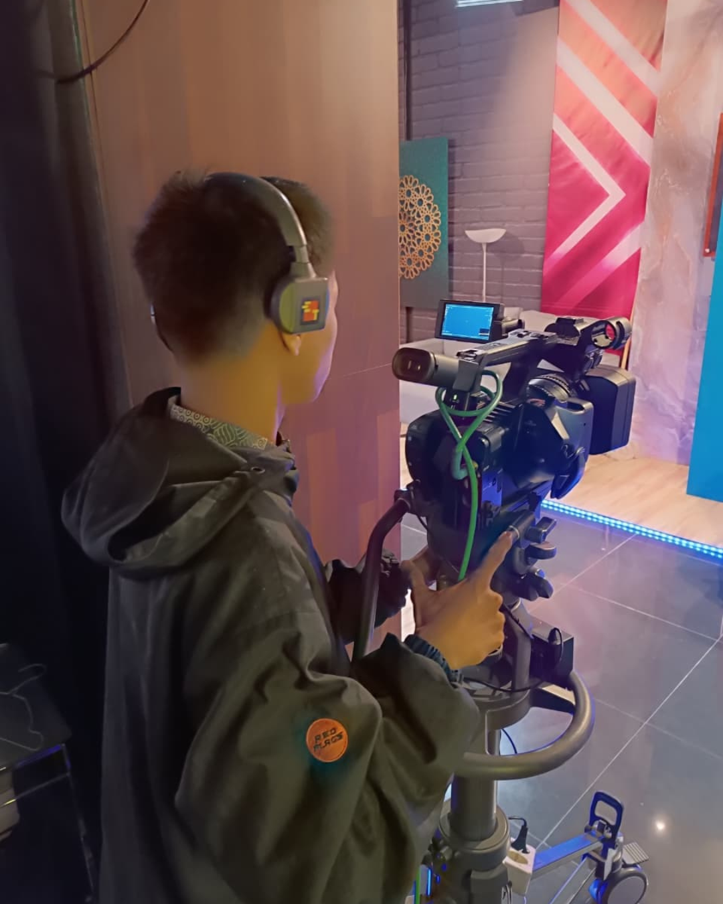

Saya adalah pelajar SMK yang memiliki minat dan kemampuan dalam pengembangan frontend maupun backend dengan Python saya lengkapi pengalaman dengan pernah Magang di LPP TVRI Kalimantan Selatan di bagian Teknik, di mana saya mengelola Ruang Transmisi dan juga bertugas sebagai kameramen/Audio.
M. Nazwa Kurniawan Pelajar SMK yang bersemangat di bidang pengembangan web. Saya menguasai frontend dengan HTML, CSS, dan JavaScript, serta memiliki keahlian Python untuk backend. Saya pernah magang di LPP TVRI Kalimantan Selatan di bagian Teknik/Transmisi, yang melengkapi pengalaman praktis saya.
Membuat tampilan website yang menarik dan responsif menggunakan HTML, CSS, dan JavaScript.
bisa menganalisis dan mengembangkan backend menggunakan Python.
dibidang teknik saya pernah mengoprasikan MCR (Master Control Room) di LPP TVRI Kalimantan Selatan serta mengoprasikan peralatan studio & subcontrol.
Bagian Teknik/Transmisi
Moment s berharga selama magang di LPP TVRI Kalimantan Selatan, mengelola ruang transmisi dan menjadi kameramen.
Website ini dibuat untuk anak magang SMKN 1 PARINGIN, Sebuah Kemajuan pada Name Tag mereka yg bisa di scan lewat google dan nomor pembimbing yg lengkap!
Game online seru yang bisa dimainkan bersama teman (mabar) langsung dari browser.
Aplikasi keuangan yang memungkinkan pengguna untuk mengelola keuangan mereka secara real-time.
Follow my Instagram: @mnazwakurniawan25